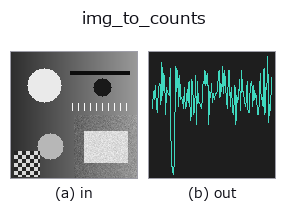

bridge op• Data kinds: image → counts
• Call: fullseye.apply(img, "img_to_counts", a=0.5, b=0.5) (the 2-D model is one image plus two scalar knobs a,b∈[0,1])

*The figure is the actual output on a synthetic 128×128 input. Left: input, right: output. Point clouds are drawn as a top-down scatter (brightness = z), 1-D series as a line plot, volumes as the maximum-intensity projection along z, videos as the middle frame, complex images as magnitude; return values that are not pictures are shown as the values themselves.*
Sweeping knob a (0.1 / 0.5 / 0.9, the other knob at its default):
▸ img_to_counts: knob a sweep (docs site)
Sweeping knob b (0.1 / 0.5 / 0.9, the other knob at its default):
▸ img_to_counts: knob b sweep (docs site)
On other images (synthetic scene / photo / coins. Top row: inputs, bottom row: their outputs. Knobs at default):
▸ img_to_counts: other inputs (docs site)
*The 4th column is a colour (H,W,3) input. This op handles colour without crossing channels (it does not convolve the colour channel as a third spatial axis).*
Read one row (or column) of the image as expected photon numbers and draw a Poisson-sampled 1-D count series.
Poisson random numbers with expected value expected = profile * n_max (fixed seed 20260907). A synthesiser for the photon-counting family (tb_counts_to_countrate / tb_spad_deadtime_apply / tb_tcspc_background_subtract …), producing the non-negative integer 1-D sequences it accepts; as with tcspc_simulate, the fact that "the expected value is known" is the basis for cross-checking.
• a → position of the row/column (same rule as img_to_signal; b also sets the orientation).
• b → a row for b < 0.5, a column for b ≥ 0.5. In addition, the maximum photon count per 1 pixel n_max = 10 ** (1 + 2 * b) (10 at b=0, 100 at b=0.5, 1,000 at b=1). The fewer, the more the shot noise stands out.
• Returns: 1-D int64, non-negative. Length W for a row, H for a column.
• Deterministic (fixed seed). The same input and the same knobs give the same sequence.
Note: pixels with expected value 0 get count 0 (Poisson(0) is always 0).
• gallery2d_bridge family guide
• Sample-data catalog (download URLs / licences) — 2-D uses skimage.data (BSD/public domain) plus synthetic images; 3-D lists download URLs for real data sources (Stanford, PDS, …).
• Operator provenance and references — the sources of the research/methods this op family came from.
• The canonical algorithm (author, year) and its uses are named in the family usage guide above.
The program below has been verified to run (same input as the figure). In Studio's help this block becomes buttons that load and run it on the spot.
img_to_counts 0.50 0.50
▸ Load this pipeline · Load & run
• gallery2d_bridge — py -3.11 examples/gallery2d_bridge.py
counts as input)identity · tb_spad_deadtime_apply · tb_spad_deadtime_correct · tb_tcspc_coates_correct · tb_tcspc_irf_convolve · tb_tcspc_background_subtract · tb_dtof_depth · tb_countrate_to_counts
bridge)img_to_points · img_to_keypoints · img_to_signal · img_to_projection_profile · img_to_matrix · img_to_video · img_to_volume · img_to_lightfield
*Provenance: ops.py — 2D operator registry. This per-op note is generated by tools/opdocs.py md (do not hand-edit).*
© 2026 Kazufumi Furuse — Fullseye operator documentation. Licensed under Apache-2.0.